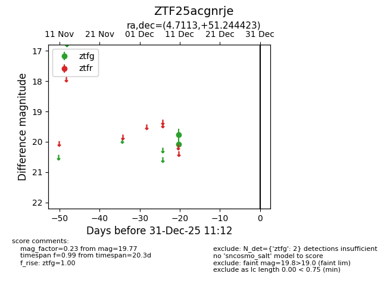
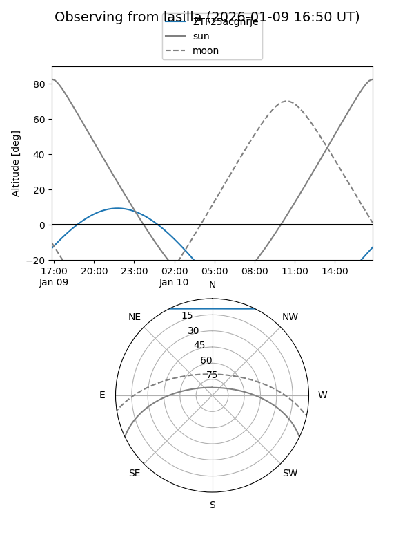
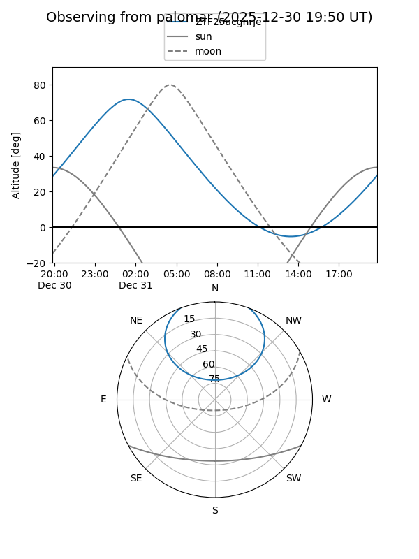

ZTF25acgnrje
Target ZTF25acgnrje at 2025-12-18 11:17
Aliases and brokers:
FINK: fink-portal.org/ZTF25acgnrje
Lasair: lasair-ztf.lsst.ac.uk/objects/ZTF25acgnrje
ALeRCE: alerce.online/object/ZTF25acgnrje
alt names
ZTF25acgnrje (ztf,fink_ztf)
Coordinates:
equatorial (ra, dec) = 4.7113,+51.24442
equatorial (HMS+DMS) = 00:18:50.70,+51:14:39.92
galactic (l, b) = (117.7408,-11.29851)
Photometry
last ztfg=19.77
2 ztfg detections
Lightcurve

Visibility


Additional plots